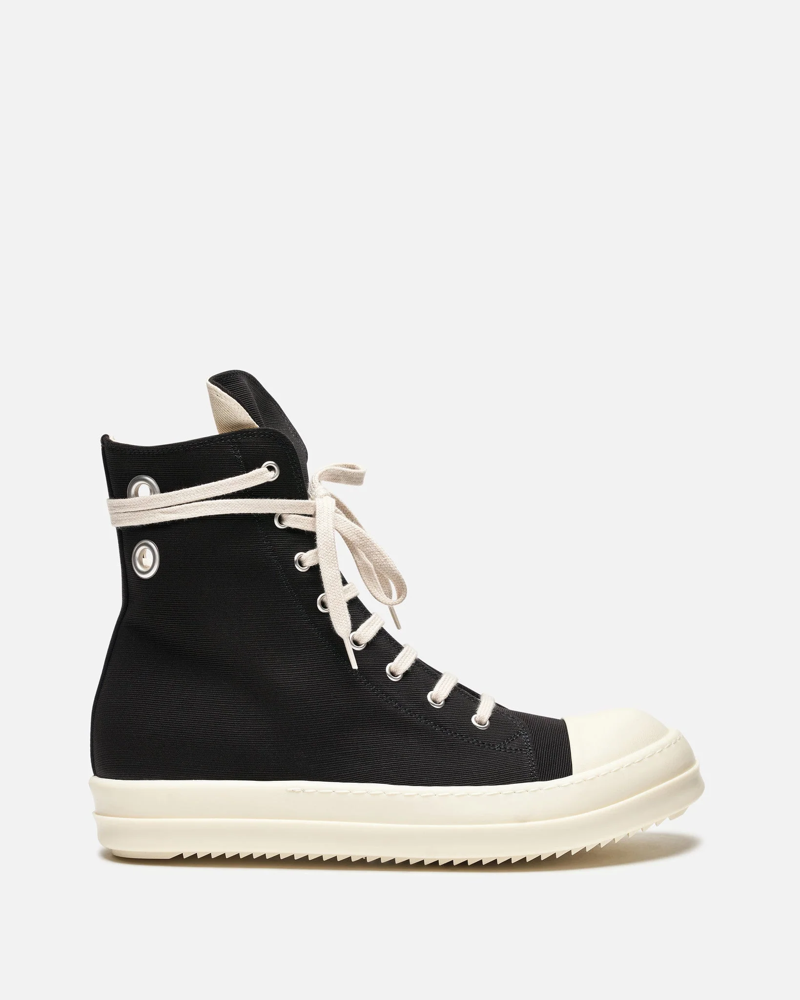

Rick Owens DRKSHDW Shoes
The Icon of Avant-Garde Fashion
Rick Owens DRKSHDW sneakers have became a staple in the world of high end streetwear fashion. Known for their exaggerated proportions, chunky soles, and elongated tongues, these shoes are instantly recognizable. They mix luxury design with underground culture making them one of the worlds most influential sneakers of the last decade.
The DRKSHDW line reinterprets classic silhouettes like converse style high tops and slip-ons but with Rick Owens signature dark, minimalistic aesthetic. Often built with premium canvas, leather, or distressed materials they are designed not just as footwear but as statement piece's that reflects the desiner's unique vision of style.


Popular DRKSHDW Models
| Model | Material | Unique Feature |
|---|---|---|
| Ramones | Canvas / Leather | Inspired by Converse, exaggerated sole |
| Geobasket | Leather | Oversized tongue, chunky high-top design |
| Abstract Sneakers | Canvas / Suede | Minimal silhouettes, flat rubber sole |
| Slip-On Sneakers | Canvas | Easy wear, clean silhouettes |
| Beetle boot | Leather | Hybrid between sneaker and boot |